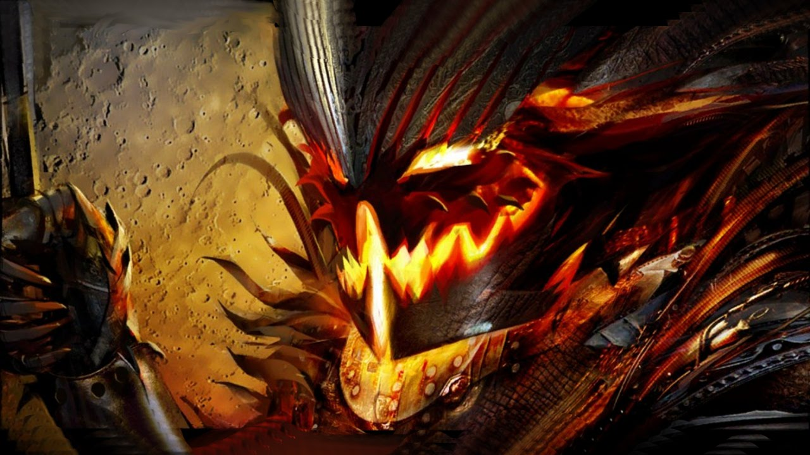

16.10.2018
Newsy | Eventy Cykliczne
Shadow of the Mad King 2018
Niespokojne duchy powracają jak co roku w październiku do świata Tyrii. Już 16 października do gry ponownie zawita haloween znane również jako Shadow of the Mad King. W tym roku oprócz klasycznych zabaw znanych z poprzednich edycji takich jak:
- Ascend to Madness
- Lunatic Inquisition
- Mad King's Clock Tower
- Mad King's Labirynth
- czy Mad King Says
- Reaper’s Rumble: Po raz pierwszy od premierowego wydania Haloween w 2012 roku powraca Reaper’s Rumble. Mini gra PvP cechuje się szybkim tempem rozgrywki, w których uczestnicy rywalizują o dynie, dzięki którym mogą przyzywać hordy szkieletów, które wspomagają ich w szturmowaniu bazy przeciwnika.
- Mad King’s Raceway: Osadzony na mapie Reaper’s Rumble arena wyścigowa przeznaczona do driftowania najnowszym mountem. Jak na domenę szalonego króla przystało jest ona najeżona przeszkodami takimi jak infrastruktura cmentarna, czy eksplodujące dynie.
- Trzy nowe skiny: Inspirowane klasyką horrorów do naszej dyspozycji trafią:
- The Cure: Inspirowana koszmarem w jaki mogą zamienić się medyczne i paramedyczne zabiegi w rękach szaleńca strzykawka. Nasze spooky postacie będą mogły go używać jako sztyletu.
- Soul Conductor: Piorunochron, którego możemy używać jako miecz, swoim wyglądem przywołujący sceny rodem z "Egzorcysty" i innych filmowych klasyków gatunku.
- Revenge: Topór kształtem i stylistyką przypominający rzeźniczy nóż, przywodzący na myśl pozycje z kategorii gore, w których odrąbywane kończyny nie są niczym nadzwyczajnym.